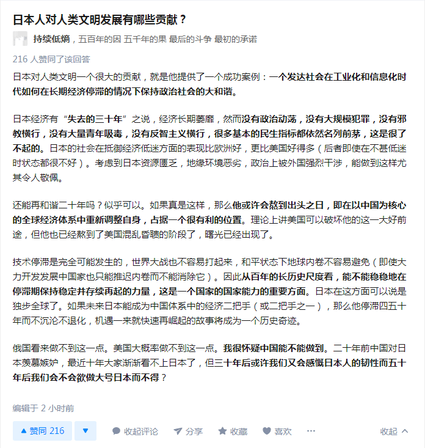
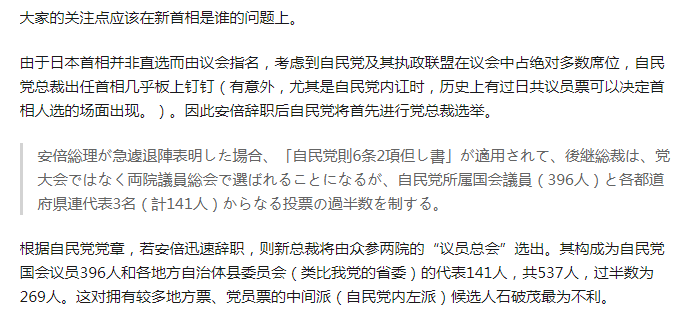
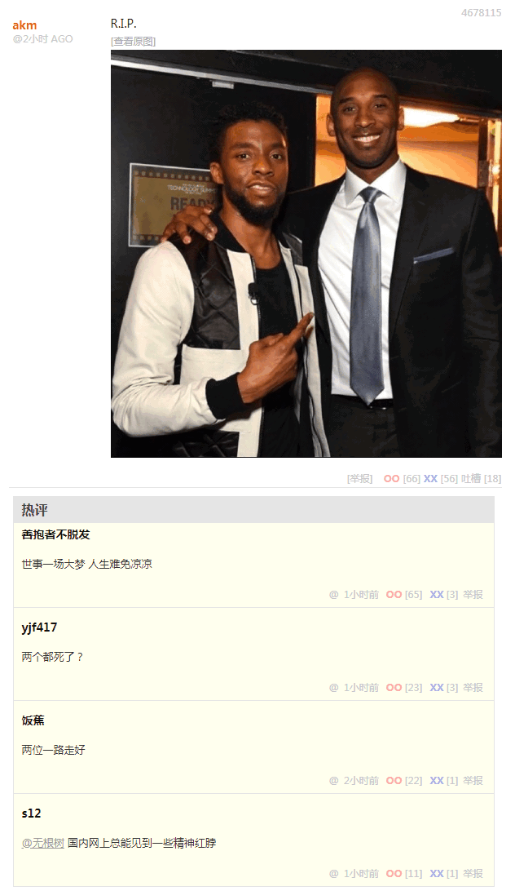
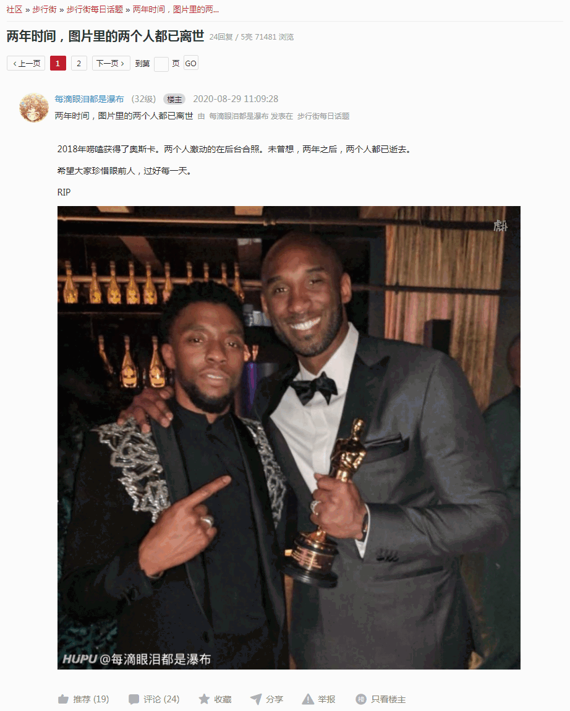

2020-08-29 11:30
中午了，上网乱转发现「匿名岛夷」出现一条依法治国重要情报：


( д ) ﾟ ﾟ怎么还有个住党校宿舍的
盲生，你发现了华点(´ﾟДﾟ`)
海陆丰不是都围剿过一次了？还有这么多啊
(・∀・)好家伙，还有个哥们用的还是一代身份证号，这是抓了多久没抓到啊
不瞒你们说，我患老年痴呆的大舅二舅三姑姥爷集体走失|∀ﾟ
海陆丰实在是乱
今天才在家看到一本大册，书里全写着那些人，厚厚一本，明天有空就拍上来
53个人头，53份赏金
仅看这条法制新闻本身，并没有什么额外的情报，毕竟「潮州偷，揭阳抢，海陆丰没有共产党」的顺口溜已经在国际化大都市「华语第一精日论坛」和之江临安「原创文学论坛」流传已久，想必在岛夷之间口碑甚佳，而索虏对此反而不甚了解。
如果是「澎湃新闻」报道的相关内容，还可以从其遣词造句当中大致获得一些线索。不过呢，即便这样，与其它情报尤其是最近的热点结合起来，也能深入揭批其中蕴涵的充沛政治和意识形态内容以及引领的激烈政治和意识形态斗争新动向。
简单说，国际化大都市「华语第一精日论坛」到现在都没有安倍辞职相关内容，毕竟新时代版规明确规定了「国外政治」内容也将遭遇马瓦力专政铁拳定向镇压和精确打击。
参考前一篇备份的各种素材，当地普遍认为安倍遭遇石破茂背刺，而九省通衢の煎蛋给出继任总裁之候补名单并附加评论当中只有石破茂没有首相家学渊源，于是被部分境内基层人民群众视为「平民代表」，节奏很容易就带起来。
实际上公开资料显示「其父是前建设事务次官、鸟取县前知事、参议院前议员、前自治大臣兼国家公安委员会委员长（铃木内阁）石破二朗」，还是子承父业的官二代军二代警二代兼「大手情报机构」世家嘛。
并且，虽然日本人石破茂没有日本首相祖宗，但是却有我中华兲朝上国羯族龙裔「祖宗」——石虎，以及血脉觉醒继承了羯族充沛武德的「兄弟」石泰峰，参考繁荣的简体中文互联网上那许多「联宗」相关内容，最起码也是紧密配合遥相呼应的关系户。
于是线索就串起来了，前面提到了从个人经历出发解读四十多年来幽州迷宫地下城恶人谷的刀光剑影鼓角争鸣，主要是结合吟游诗人指桑骂槐不惮以最大的恶意揣测户口本奶奶石老太太与其娘家人之间的互动，曰若稽古则从1974年老布什扎根幽州「下基层」锻炼情报工作开始，已经构成逻辑链的主要部分了。
已经写过的内容不再重复，仅仅补充素材。考虑到陕甘宁边区和晋绥边区的贩毒传统，以及石泰峰先后担任宁夏、南蒙古一把手的经历，不惮以最大的恶意揣测，这是在整合「北方少数民族」毒贩力量，与潮汕、云南等地的「南方少数民族」毒贩展开对决。
不过，毕竟「持党校宿舍常住人口居民身份证者」从事鸡鸣狗盗活动遭遇「锤镰帮中央委员、全国人大常委、法律委员会委员」严厉打击和残酷镇压，将其定性为「黑帮火并」政治不正确，应该用「红帮火并」的说法。
2020-08-29 12:45
现在，国际一流和谐宜居之都「高学历精英社交圈」正在首页今日头条位置醒目应景推荐一条费拉甚为不堪之重要情报：

而紧接其后的情报，则明确提供了「党」内各个阵营的构成以及新时代总裁之预测（摘录）。
关于「中央钦定」：

关于「党内无派千奇百怪」：
关于「民主集中制」：
最终得出结论：
综上，从目前来看，新总理的可能性从大到小依次是麻生太郎、岸田文雄、菅义伟、石破茂、河野太郎。但考虑到安倍本人健在，其表态将会决定性地影响整个局面，自民党维系安倍右翼路线的可能性较大。
其中提到了岸田文雄，也没有日本首相之家学渊源，军二代官二代财二代的背景与石破茂有一拼，与麻生太郎这种皇亲国戚还有差距。但是，排名靠前的这二位，都在九省通衢の煎蛋为了力挺二次元萝莉而炮制的名单上消失了，就为了按照台词互相对话的高亮评论以攻击「老子中堂儿中堂」子承父业的顶班惯例么？
这时候再看国际化大都市「华语第一精日论坛」的经济新闻，就能体会到「世界是物质的，物质是运动的，运动的物质之间是存在着普遍联系的」这种伪装成诡辩唯物主义的「玄学」原则了也：
小鹏汽车上市了
现在还有嘴硬的没有？还说一衣带水的邻邦之间的豪门贵种走兽派互相没有安插传统人脉关系户？还说本朝不是邦昌時代？
2020-08-29 13:30
现在，九省通衢の煎蛋的画风是这样的：

其中刚才看到被指责为「精神红脖」的活跃账号无根树之言论，是「死了一只猩猩而已」，现在已经被删了。
而南直隶「远东第一体育论坛」的画风是这样的：

简单说，看到「结肠癌」这种死因，是不是与热点新闻「安倍贵恙」联系起来了？
加上之前解读过「神戸大地震」的玄学理念，又证明了「没什么自由意志，中央情报局已经钦定了」之类伪装成诡辩唯物主义者的加尔文主义钦定论歪理邪说，都是替幕后黑手阴谋诡计洗地。
如果不认为这二位能制造地震或干预日本首相人选，只能认为幕后黑手神通广大无所不能，主要手段是运用大手情报机构把哪儿渗透得如同筛子一般，安插了充沛的间谍特务卧底，关键时刻小人物改变历史走向，并提供充沛的色目混混鸡鸣狗盗之徒作为外围炮灰摇旗呐喊擂鼓助威。
在《异闻录》正文〔017〕当中都强调过了，“这就是岗位职责，放风用的招牌活广告，或者说替身演员影武者，当然要随着本尊谢幕”。这种「vtuber皮」出道就是卖身契，把从肉体到灵魂的一切都奉献给了「奴隶主」，一切行动听指挥，理解的要执行，不理解的也要执行，在执行中加强理解。
而吟游诗人炮制的各种划时代大作所吹捧的「杀伐果断通权达变狠角色」开挂升级装哔打脸平砍连击带顺劈一命通关天下布种之光辉历程，以及吟游诗人本身作为「钦定文豪野生国师意见领袖指路明灯」一字百元年入四千万连十九年七闰都不知道即可荣获茅台杯人民文学奖之类传奇经历，以此类推。
所以我才面向普通人民群众反复强调「从自己独立的人格和意志出发用自己的脑壳思考」，以及针对业内引用康托的名言「数学的本质在于它的自由」（《知乎问答№036》），就是为了声明自己那大无畏的反革命乐观主义精神，与伪装成诡辩唯物主义者尤其是「物理学家」的加尔文主义钦定论歪理邪说间谍特务卧底坚决斗争。
类似名言应有尽有，哪怕「持加尔文主义钦定论歪理邪说观点者」吹捧「英格兰路径依赖美利坚天命昭昭」第三、四、五……罗马，也有罗马名言打脸：
「谁因为害怕贫穷而放弃比财富更加富贵的自由，谁就只好永远做奴隶。」——西塞罗
各位读者（除了叫嚣「忠诚不绝对就是绝对不忠诚」的膝盖生根头顶绿得发黑贱到骨子里去了的奴才之外），还羡慕市面上炒作得玄乎其玄的从小比人聪明还比人努力的神童贵种大少爷「风口上一飞冲天的猪」（注意情报掮客特意强调只不过是一头养肥了就宰的「猪」而已，不是「后浪」）么？还嘲笑「缩卵怂货窝囊废」「孤苦伶仃可怜废柴草根文盲矬胖老穷光棍汉精神病扑街写手不入流码农数学渣」么？
2020-08-30 07:15
刚爬起来酒劲还在头昏脑胀，上网乱转发现「匿名岛夷」出现了从足协主席到军委主席的高第良将家衙内指使「北京国安」运用人脉联系「体育日本新闻社」不辞劳苦从境外传送的「后安倍」系列重要情报：
首先是人物关系图：
ポスト安倍を巡る相関図（スポーツニッポン新聞社）
然后又是强调「中央钦定」情况可能有变，明天决定：
当然还有二次元素材，这次时间紧任务重，「北京国安」也来不及翻译嵌字修图了，当然对国际化大都市「华语第一精日论坛」的娱乐至死の色目逗哔来说毫无语言障碍，而南直隶「远东第一体育论坛」的绿帽爱好者就专挑汉字连蒙带猜凑活看吧（点击看大图）：
2020-08-30 08:30
现在，「匿名岛夷」上的画风是这样的：
然后是「八姓家奴」石破茂的黑历史：
以及一段杜撰的安倍晴明晋三遗言：

人生七十古来稀，我没到七十也快了，人老总想后事。那天石破用枪顶着我的后背说，中国有句话叫“盖棺定论”。当时我就念了两句诗“书生轻议冢中人，冢中笑尔书生气”。
我在上任之初就干了三件微小的工作，宽松的货币政策、积极的财政政策和结构性改革，被媒体总结为“安倍经济学”。日本的“安倍主义”完全是这样一种特殊的产物，以至于有一次我对麻生说“有一点可以肯定，我不是安倍主义者”。都说种瓜得瓜种豆得豆，但是我播下的是龙种，而收获的却是跳蚤。很惭愧。
我这一任还想干两件事。一个是举办奥运会，对这些事持异议的人不多，只有那么几个二次元死宅，在我耳边叽叽喳喳，无非是让我及早按照什么架空剧情按时宣布取消，以炒作扫帚星乌鸦嘴的神机妙算罢了。另外一件事你们都知道，就是修改和平宪法变成正常国家，这事拥护的人不多，反对的人不少。
这两件事没有完，这笔遗产得交给下一代。怎么交？和平交不成就动荡中交，搞不好就得血雨腥风了。你们怎么办？只有天知道。